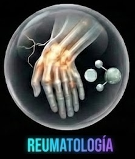
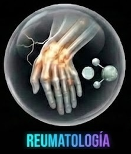
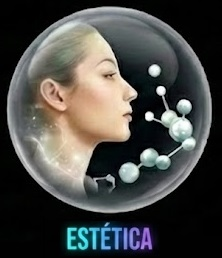
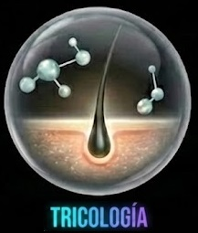
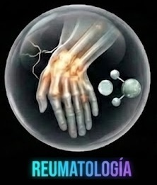

Sangre Normal: Tráfico Habitual
Tu cuerpo sabe curarse, pero a veces la lesión es demasiado grande para los recursos habituales. El Plasma Rico en Plaquetas (PRP) concentra tus propios recursos.
Imagina una obra en construcción. Si tienes una pared rota, necesitas obreros y ladrillos. El PRP es ese equipo de trabajo masivo que enviamos directamente a la zona dañada.
No es solo sangre; es un "super-concentrado". Aislamos tus plaquetas y multiplicamos su presencia (más de 5 veces lo normal) para acelerar la reconstrucción física.
Concentrado PRP: Equipo de Reparación
A veces las células están presentes pero 'dormidas' o confundidas por la inflamación. La tecnología de Exosomas (MCT) usa luz y energía para despertarlas.
Volviendo a la obra: ya tienes los obreros (PRP), pero ¿saben qué hacer? Los exosomas son los arquitectos que dirigen la reparación con los planos biológicos exactos.
Usamos una luz especial para cargar tus células de energía (ATP) y mejorar la comunicación. Es como darles una instrucción clara: 'bajen la inflamación' y 'trabajen más rápido'.
Todo ocurre en menos de una hora. Sin hospitalización.
Tomamos una pequeña muestra de sangre de tu brazo, igual que en una analítica rutinaria. (5 min)
Tecnología avanzada separa y concentra los factores curativos en un circuito estéril y cerrado. (10 min)
El especialista aplica el concentrado suavemente en el punto exacto de la lesión. (5 min)
Sin químicos, sin cortisona y sin fármacos sintéticos. Es tu propia biología trabajando para ti.
Ayuda a reprogramar la zona para detener la inflamación crónica y calmar el dolor desde el origen.
Reduce drásticamente los tiempos de espera en lesiones musculares o de tendones.
En muchos casos, ayuda a retrasar o evitar la necesidad de cirugías complejas.

Al usar tu propia sangre, es biológicamente imposible que tu cuerpo la rechace o tengas una reacción alérgica.
Tu sangre nunca entra en contacto con el aire exterior. Pasa de tu vena al sistema de procesamiento y de vuelta a la zona a tratar, garantizando esterilidad total.
A diferencia de los medicamentos fuertes, este tratamiento es local y seguro.
Vida normal relativa. Puedes sentir una ligera molestia, lo cual es buena señal: significa que la reparación ha comenzado.
La inflamación baja y la movilidad aumenta.
Tu cuerpo construye tejido nuevo y sano. No es magia instantánea, es biología sólida.
Cada paciente es único. Tu médico te dará una pauta personalizada.
La medicina regenerativa moderna no siempre significa más químicos; significa usar la tecnología para
liberar el potencial que ya llevas dentro. No te obliga a elegir: para construir el edificio perfecto
(tu salud), a veces necesitas más ladrillos, a veces mejores planos, y muchas veces, lo necesitas todo.
Tu cuerpo pone la materia prima. Nosotros ponemos la tecnología para que funcione al
máximo.
Él evaluará tu caso y te confirmará si eres el candidato ideal para activar tu propio poder de curación.
Tu salud, tu propia biología.